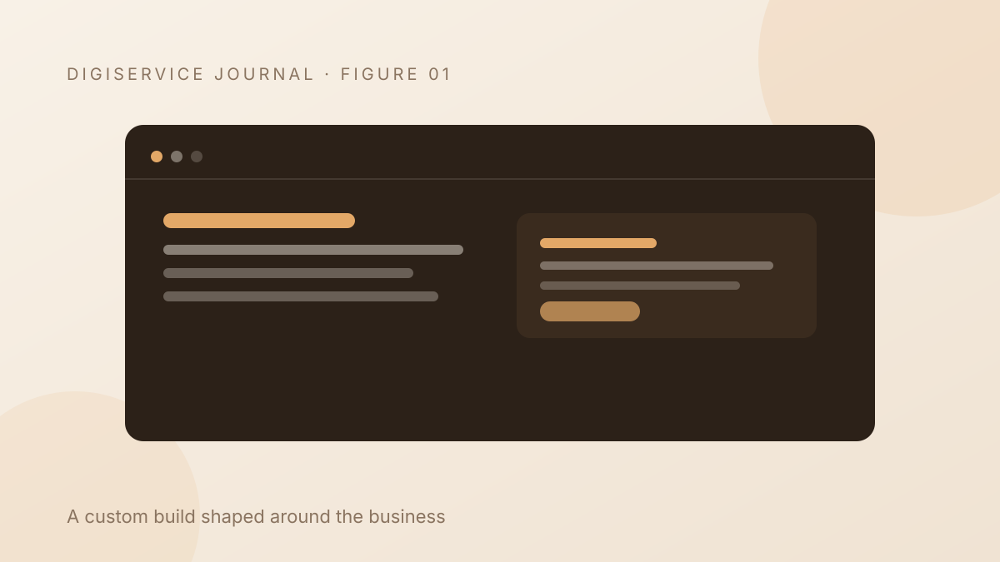

In Pakistan’s rapidly evolving digital landscape, businesses are increasingly recognizing the value of custom web development. Unlike generic templates, custom websites offer tailored solutions that align with specific business goals, providing a competitive edge in the market.
What is Custom Web Development Services?
Custom web development services involve building a website or web application entirely from scratch, tailored specifically to meet the unique needs, goals, and brand identity of a business or individual. Unlike ready-made website templates or drag-and-drop builders (like Wix or Squarespace), custom web development is fully personalized and more flexible in design, functionality, and performance.

Key Features of Custom Web Development:
1. Tailored Design
Custom websites are designed from the ground up to match the exact branding, target audience, and user experience requirements. This allows complete control over how the website looks and feels, ensuring it stands out from competitors.
2. Unique Functionality
Businesses often need features that aren’t available in standard templates, such as advanced booking systems, custom dashboards, dynamic user interfaces, or complex integrations. Custom development enables these specialized functions.
3. Scalability
As a business grows, so do its digital needs. Custom-built websites are more scalable, meaning they can be easily upgraded with new features, pages, or integrations without major rework.
4. Performance Optimization
Developers optimize code, database queries, and load times to make the website fast, efficient, and responsive across devices. This leads to better user experience and higher search engine rankings.
5. Security
Custom websites can be built with enhanced security measures tailored to the business type, reducing vulnerabilities compared to mass-market solutions.
6. SEO Friendly
Custom development allows precise control over on-page SEO elements like metadata, URLs, site structure, and mobile responsiveness—helping the site rank better in search engines.
benefits of custom web development
1. tailored web development Pakistan
Custom web development allows businesses to design websites that cater specifically to their target audience’s preferences and behaviors. This personalized approach enhances user engagement and satisfaction.
“Custom web development enables small businesses to create unique online presences tailored to their specific needs and goals, instead of relying on pre-made templates.” Tech Buzz
2. Enhanced Performance and SEO
Custom-built websites are optimized for speed and search engine visibility. By avoiding unnecessary code and focusing on efficient design, these sites load faster and rank better on search engines.
“Custom website development solutions offer a range of benefits for businesses looking to establish a solid online presence.”
3. Scalability and Flexibility
As businesses grow, their website needs evolve. Custom web development provides the flexibility to scale and adapt features without the constraints of pre-designed templates.
“Custom websites or custom Java web applications have the unique advantage of offering much greater flexibility and scalability to businesses.” Xavor Corporation
4. Robust Security Measures
Security is paramount in today’s digital age. Custom websites can incorporate advanced security protocols tailored to specific business requirements, reducing vulnerabilities.
“By investing in custom website development solutions, businesses can mitigate cyber risks and build trust with their customers.” Bitcot
5. Seamless Integration with Business Processes
Custom websites can be designed to integrate seamlessly with existing business systems, enhancing efficiency and data management.
“Custom web apps can be easily integrated into your business’s workflow. The potential to integrate databases with custom web apps is one of the amazing benefits of custom web app development.”
6. Unique Branding Opportunities
A custom website serves as a digital representation of a brand’s identity. It allows for unique design elements that differentiate a business from competitors.
“Your website is often the first impression potential customers will have of your brand, so it needs to make an impact.”
7. Cost-Effective in the Long Run
While the initial investment in custom web development may be higher, it often results in long-term savings by reducing the need for frequent overhauls and offering better ROI through improved performance.
“One of the key advantages of opting for web development services in Pakistan is the cost-effectiveness they offer.”
Conclusion
Investing in a personalized digital solution offers numerous benefits of custom web development, especially for Pakistani businesses navigating a competitive online market. One of the primary benefits of custom web development is the ability to design a user experience that aligns precisely with your target audience’s needs, behaviors, and expectations.
Unlike template-based websites, the benefits of custom web development include full control over functionality, design aesthetics, and performance. For businesses in Pakistan, where mobile usage is high and internet speed varies, the benefits of custom web development ensure mobile responsiveness and optimized page load times.
Another significant advantage is SEO — one of the core benefits of custom web development is having clean, scalable code that search engines prefer, improving visibility and ranking. Security is another of the key benefits of custom web development, offering the option to implement tailored protection layers against cyber threats specific to the local digital landscape.
Scalability also ranks high among the benefits of custom web development, allowing you to add features and grow your site in line with your business expansion. Integrating localized payment gateways like JazzCash or EasyPaisa further demonstrates the practical benefits of custom web development. Additionally, brand differentiation stands out among the benefits of custom web development, giving businesses a unique online identity.
Whether you’re a startup, e-commerce store, or service provider, understanding the long-term benefits of custom web development can significantly boost your ROI and customer trust in the Pakistani digital market. Ultimately, the benefits of custom web development go beyond just appearance—they deliver performance, flexibility, and growth potential tailored to your business goals.
For professional assistance in custom web development, explore our Home Page, review our Pricing options, or view our Project Portfolio to see our successful implementations.